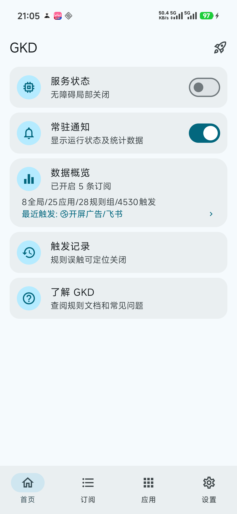
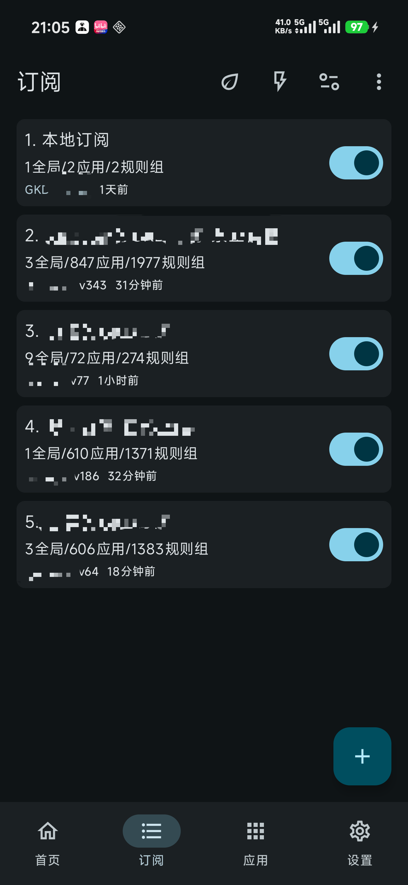

gkd 新手五分钟入门：手机自动点广告这件事，一次讲透
从零理解 GKD 是什么、为什么能帮你少看弹窗，五分钟走完安装授权到跑通第一条规则的最短路径，避开新手最容易踩的三个坑。
这篇能带你从完全不懂到用起来——不需要任何技术基础，跟着一步一步点就行。
它到底是干嘛的？一个生活化类比
想象一下：你每次去超市买完东西，收银员总要问你"要不要办卡""要不要加会员"，然后屏幕上弹一串广告。你已经第 N 次来这家店了，这些问题你都能背下来，但收银员每次还是要问一遍。
GKD 就是你身边那个"帮你挡推销"的朋友。你跟它说："以后再有人问办卡，你就说不用；再弹广告，你就帮我按掉。"然后它站在你旁边帮你处理这些你不想处理的弹窗——你专心购物就行。
换成人话：gkd官网介绍的就是这样一个运行在你 Android 手机上的自动化小工具，通过系统自带的无障碍权限监听屏幕变化，看到预设好的弹窗或按钮时，自动帮你点"关闭""跳过""确定"之类的动作。它不搞复杂的图像识别，不靠录制回放，就靠系统暴露的界面节点信息做精确匹配。

五分钟上手：从拿到安装包到跑通
第一次用，按这个顺序走，别跳步。
第一步：把软件装进手机
安装包从下载拿就好，选对应你手机架构的版本装上。装完先别急着打开，某些品牌系统（比如小米、OPPO）如果应用不是从自家商店来的，可能会在无障碍授权那一步拦你——后面遇到再处理，先走主线。
第二步：给它无障碍权限
打开 GKD，首页上有一个大的"无障碍权限"卡片，点右边的授权按钮。系统会跳到设置里的无障碍服务列表，找到 GKD 那一项点进去，打开开关。系统会弹一个风险提示，大意是"这个应用会看到你屏幕上的内容"，选允许就行——GKD 用这个权限来判断当前界面是什么，不会干别的。
某些机型可能会提示"受限制的设置"或者"此应用不可用于无障碍"，这不是 GKD 坏了，是系统安全策略，去应用信息页面找到"允许受限制的设置"开关打开，或者用系统文件管理器重新装一次 APK 就能解决。
第三步：加一个订阅
这里很多新手卡壳——装完 GKD 打开一看，啥规则都没有，以为坏了。其实 GKD 本体默认不带任何规则，规则都在"订阅"里，需要你自己加。订阅可以理解成一份规则清单，别人写好的，你加个链接就能自动更新。
打开订阅管理页，点"添加远程订阅"，粘贴一份大家常用的订阅链接，确认后等它拉取完。回到首页，你应该能看到一堆规则出现在应用规则和全局规则里了。

第四步：验证一下
打开一个之前有弹窗广告的应用，正常使用。回到 GKD 首页看触发记录——如果有命中了应用和规则名的条目，说明跑通了。如果没有，先确认无障碍开关是不是还开着，再看看订阅里对应应用的规则有没有启用。
这四步走完，你就是"用起来了"的状态。
上手后先玩这三个功能
GKD 功能不少，但刚入门时别贪多，先把这三个摸透。
触发记录：看看它到底在干嘛
首页往下滑就能看到触发记录。每命中一条规则，这里就多一条：时间、哪个应用、命中了哪条规则。点进去还能看到匹配到的界面节点详情。
你会发现：原来刚才刷短视频时那个五秒倒计时的"跳过"按钮，GKD 在出现的瞬间就帮你点了。这意味着什么？意味着你不需要盯着屏幕等那几秒，也意味着你可以通过这些记录判断规则有没有误触发——比如某次记录里显示它点了"允许通知"而你并没有这个规则，那就要去检查一下是不是订阅里的规则和你预期的不一样。
应用规则组：只在我允许的应用里生效
如果你不想让 GKD 在某些应用里乱动（比如银行、支付类），打开应用规则组，找到对应应用，把里面的规则全部禁用就行。规则按应用分组管理的好处是：你可以对微信放开所有规则，但对支付宝一条都不让碰——互不干扰。
这一步很重要，因为第三方订阅里的规则是作者统一维护的，不一定考虑到你手机上装了什么。主动控制"哪些应用让它动"，比事后发现它误触要好得多。
快照审查：看不懂的时候，拍张照给别人看
如果某条规则不生效或者误触了，你可以在触发记录里抓到那次界面的"快照"——就是当时屏幕上所有可读取节点的结构化数据。把快照分享出去，社区里懂规则的人能直接看出问题出在哪，比截一张屏幕照片有用得多。
快照功能刚接触时可能觉得用不上，但一旦遇到疑难杂症，它是最快的求助方式。更多关于排查和快照使用的细节，可以去gkd文档里翻对应专题。
小白的三个常见疑问
每次开无障碍都要等那 10 秒警告倒计时怎么办？
那个倒计时是系统无障碍服务的安全机制，GKD 提供了一键关闭的开关。在授权无障碍页面往下找，有个"关闭警告弹窗"的选项，勾上之后下次再开就不会等那 10 秒了。这个操作只需要做一次。
无障碍经常被系统关掉，要反复授权？
Android 系统对后台无障碍服务的保活越来越严格，有些品牌（尤其是小米、荣耀）的系统会在后台清理时把 GKD 的服务干掉。解决办法是在系统设置里把 GKD 加到电池优化白名单，打开"允许后台活动"和"自启动"选项。GKD 自己也有一个"常驻通知"开关，打开后通知栏会显示服务状态，系统也更不容易杀它。
规则写着对但就是不触发？
先别急着以为 GKD 坏了。按这个顺序排查：无障碍开关还开着吗？订阅里的对应规则有没有被禁用？这个应用是不是被规则组排除了？打开触发记录看看有没有任何命中——如果连记录都没有，说明规则压根没机会跑；如果有记录但没点到，那就是选择器匹配不上当前界面的节点结构了。社区订阅的作者通常会在仓库里同步更新规则版本，试着手动刷新一下订阅。
小结
五分钟走完安装、授权、加订阅、验证这四步，GKD 就已经能帮你省下很多被弹窗打扰的时间了。不用追求从零写规则，先用现成的订阅跑着，遇到问题了去翻一翻选择器语法的入门说明，那是进阶方向。
GKD 本体开源，如果你想看看代码、追一下订阅更新，或者需要国内镜像加快访问，GitHub、Gitee 和 GitCode 三个仓库同步维护着同一份资料。
祝用得愉快。